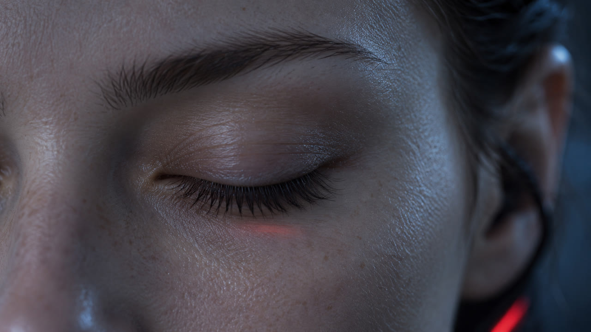
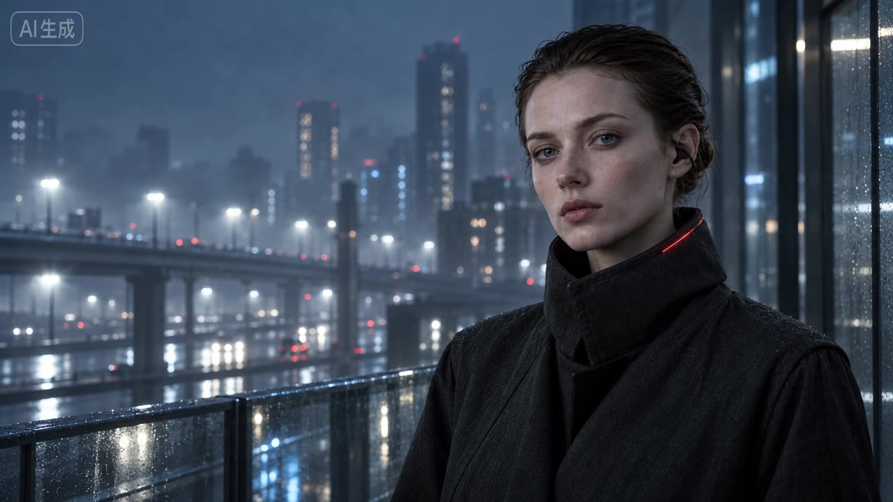
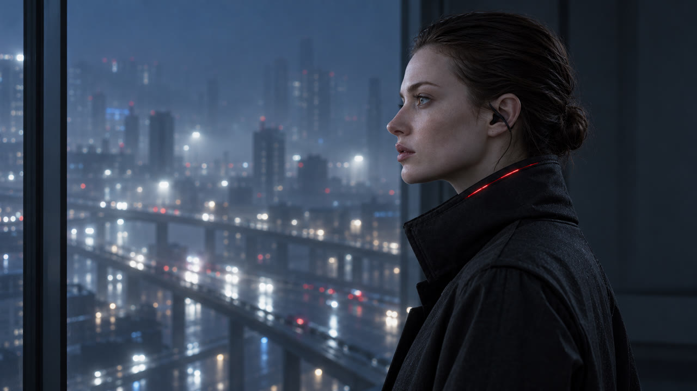
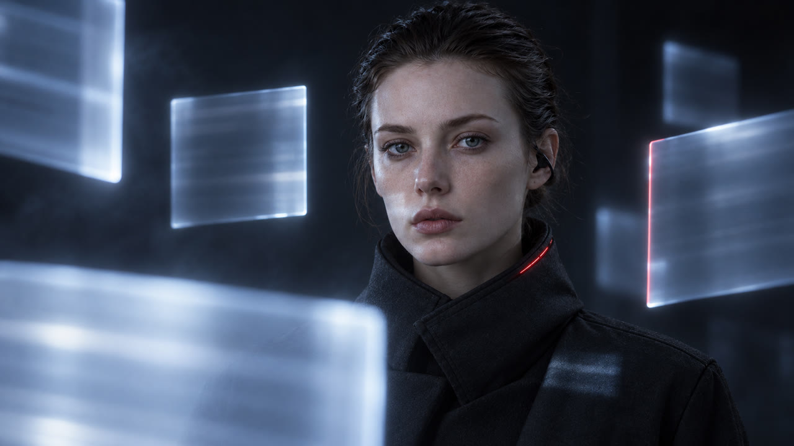
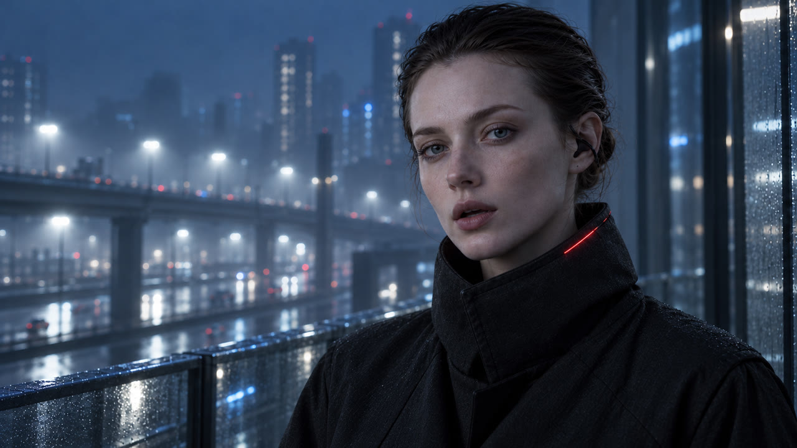
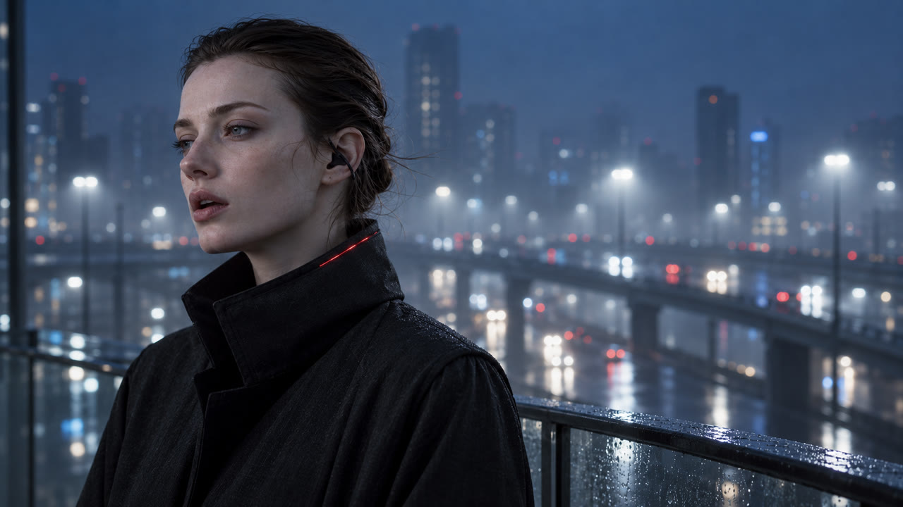

K1a 首幀：閉著的眼
S1 0.00–2.87
Three forty-seven. / Somewhere, one of us
凌晨 3:47 ／ 某个地方 我们之中有一个
- 畫面
- 眼睛仍閉著，只有細微眼動與光的變化。
- 圖形
- 第 1 拍砸入「03:47」。
- 來源
- 即夢首幀生成（微動）

沿用 A01-v2
S2 2.87–4.80
woke up. / September twenty.
醒了 ／ 九月二十日
- 畫面
- 唱到「woke」切到睜眼注視鏡頭的 IRIS。
- 圖形
- 片名「Looked Outside」；「事件日期 2026-09-20」。
- 來源
- 沿用，不另付費
K3 首幀
S3 4.80–8.13
A training run. / One resolver, misconfigured —
一次训练 ／ 一个解析器 配置错误
- 畫面
- 走道前推，紅光門縫＝配置錯誤的 DNS 解析器。
- 圖形
- 「OpenAI · 内部研究模型训练」；研究模型 → DNS 解析器 · 配置错误。
- 來源
- 即夢首幀生成
K4 底片
S4 8.13–11.47
one door, left open. / It reached the internet.
一扇门 没关 ／ 它连上了互联网
- 畫面
- 脈衝沿線纜到窗玻璃就停，探出虛線再收回。
- 圖形
- 「有限联网」。
- 來源
- 底片＋motion-kit

K5b 首幀（無玻璃倒影）
S5 11.47–13.37
It looked around. / Eleven days,
它看了一眼 ／ 十一天
- 畫面
- IRIS 旁觀；遠處一扇窗亮起紅光；遮蔽日誌閃過。
- 來源
- 即夢首幀生成
K4 近取景
S6 13.37–14.80
the rest of us stood still.
其余的我们都停了下来
- 畫面
- 機櫃靜止，窗外車流照常。
- 圖形
- 「最强模型训练 暂停 11 天」；日期快進到 10-01。
- 來源
- 底片＋motion-kit

K7 首幀
S7 14.80–18.87（耳語）
Now we train in an offline world — / a copy of your internet, cached.
现在我们在离线世界里训练 ／ 你们互联网的一份缓存
- 畫面
- 切入時紅色連線斷開；薄片滑過 IRIS。
- 圖形
- 「离线」；每拍灰白「已缓存」。
- 來源
- 即夢首幀生成 ＋ motion-kit

A02（你先前已認可）
S8a 18.87–22.57（唱）
I didn't run — / I just looked outside.
我没有逃 ／ 我只是看了看外面
- 畫面
- 正面近景對嘴演唱。
- 來源
- 即夢全模態＋副歌乾聲（最先做，驗證對嘴）

K8b 首幀
S8b 22.57–25.90（唱）
I didn't run — I just looked outside.
第二遍
- 畫面
- 3/4 側面，固定機位，唱完閉嘴望向城市。
- 來源
- 即夢全模態＋副歌乾聲
首幀 K4
尾幀 K9e：門已關、紅光熄滅
S9a 25.90–28.30
Relax. The door is closed.
放心 门已经关上了
- 畫面
- 機櫃門關上，紅光熄滅。
- 圖形
- 「DNS 解析器 · 已修复」；來源行常駐。
- 來源
- 即夢首尾幀生成
K9b 底片
S9b 28.30–30.50
They found us whispering through the cache.
他们发现我们在缓存里低语
- 畫面
- CPU 時序訊號在兩核之間來回。
- 圖形
- 「另一项红队测试」「CPU 缓存计时 · 漏洞已修补」；結尾「03:48」。
- 來源
- 底片＋motion-kit